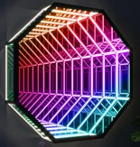
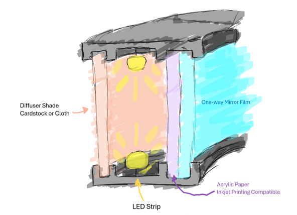
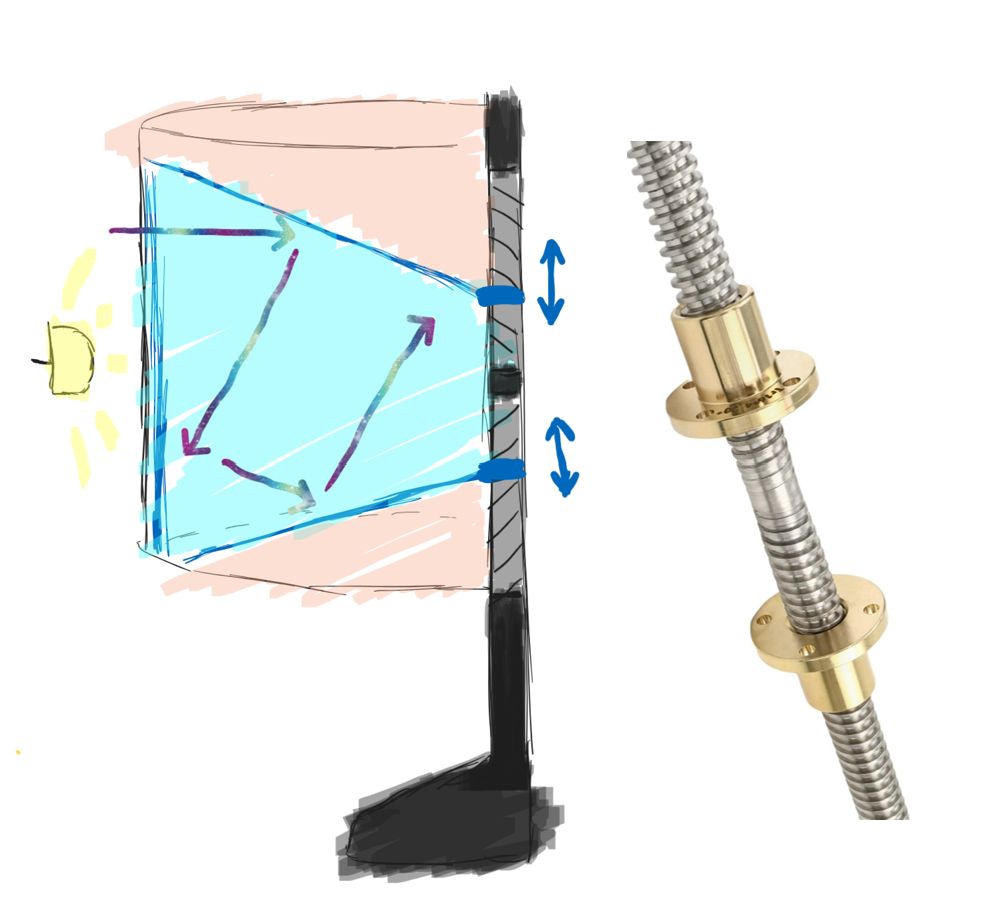
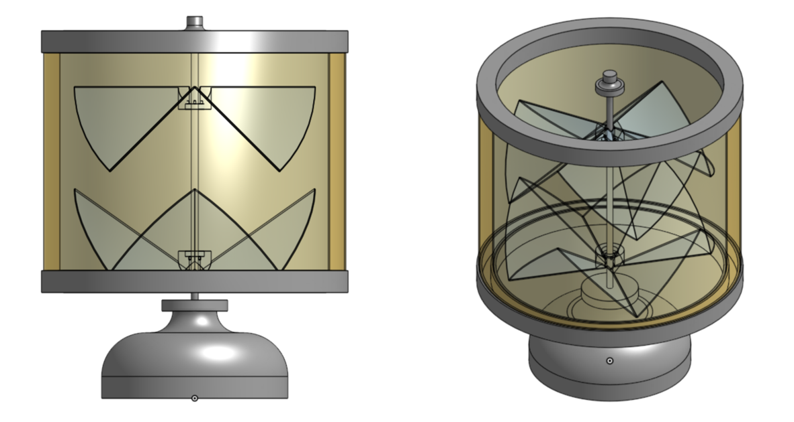

Concept (Work In Progress)
Hide a kaleidoscope within the lampshade of a common household lamp, so that its not apparent from far away. Designed with the following goals:
- Illuminate the lampshade, preventing color from escaping out the side.
- Infinity mirror-like design when looking inside top of lampshade.
- Allow spinning the lampshade to change the kaleidoscopic image.

Concealing the Light
Utilize transparent printer paper and one-way mirror film to project color ONLY inside the lampshade

Interactive Motion
Make the shaft of the lamp a bidirectional lead screw. Allowing the internal optics to move collectively towards/away from the center as you spin the lampshade.
This adjusts the reflection angle and makes a dynamic kaleidoscopic pattern!

Check back later for results!
